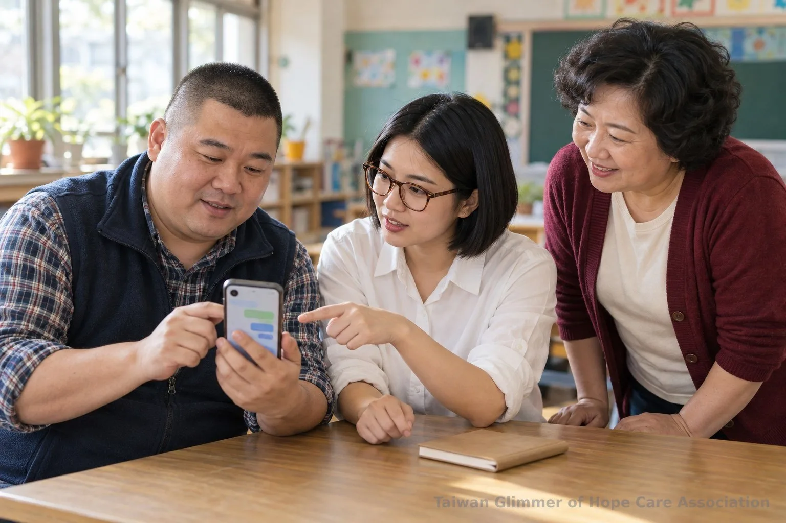
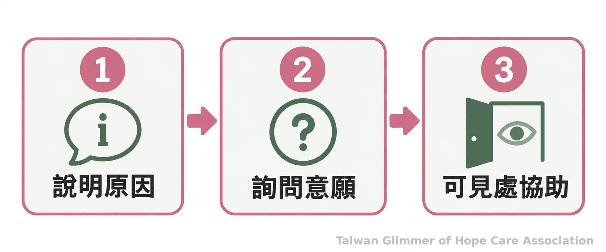
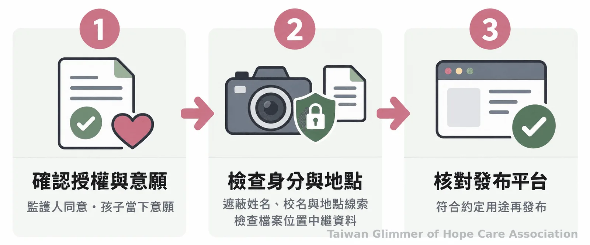

志工守則完整指南：兩位成人原則、影像同意與通報
老師、志工與教練陪伴兒少時，可如何安排聯絡、個別協助、送禮及拍照？了解兩位成人原則的適用方式、兒少法通報責任，以及 113、110 求助管道。
孩子在課後傳訊息給老師，該怎麼回？清楚的聯絡方式、身體界線、影像使用與通報流程，能讓孩子知道可以向誰求助，也讓家長理解活動安排。兒少工作者守則應由機構依場域、工作內容與成人身分訂定；兩位成人原則是安全管理方式，並非所有場域一致適用的法律規定。
一、個別聯絡與協助，怎麼讓互動保持透明？
以機構認可的群組或帳號聯絡，並讓家長或負責人知道互動目的和安排；有個別指導或接送時，優先選擇其他成人看得到、也能提供協助的情境。
兩位成人原則可降低成人與孩子長時間單獨相處的風險，例如安排另一位工作者在場，或在開放、可見的空間進行活動。不同機構的規範可能不同，應先確認哪些活動適用、無法安排第二位成人時採取什麼替代做法。讓家長知情、選擇公開場所並留下時間、地點與活動紀錄，都能使安排容易理解和追溯。
孩子若私訊詢問課業或活動，成人可以簡短回覆，再轉到正式群組續談。避免深夜私聊、私下約見或要求保密；若孩子提到令人擔心的事，先聽，不追問細節，依流程聯絡負責人或權責單位。

二、送禮與肢體接觸，先說明規則和原因
禮物依機構規則公開處理；遇到教學或安全需要而須接觸孩子時，先解釋原因與方式，只做必要的協助，並留意孩子的反應。
私下送禮可能使家長不清楚禮物來源。活動若有教材、獎品或生日禮物，可由機構訂定發放方式並讓家長知道。孩子不想收，就尊重拒絕，不要求回送，也不把禮物變成兩人間的秘密。
調整運動姿勢、協助整理衣物或處理跌倒時，先說明要做什麼，並詢問孩子是否願意。能用口頭提示或示範時，讓孩子自行操作；需要身體協助時，選擇其他成人看得到的位置。孩子拒絕就先停下來；若有眼前安全急迫的情況，僅採取必要處置，事後告知家長或負責人並留下紀錄。

三、活動照片要分開確認拍攝與分享同意
參加活動不等於同意拍攝或公開照片。應分別說明用途、發布平台與保存方式，取得監護人授權並留意孩子意願；孩子不願意時就不拍、不發布。
活動開始前，可說明照片是供內部紀錄、成果分享或公開社群使用，並分項確認授權。家長同意一種用途，不代表同意所有用途；孩子在現場改變心意，也應尊重。不同意拍照不應影響孩子參加活動。
發布前檢查姓名、校名、制服標誌、名牌、地點與背景，避免讓人辨識孩子身分或行蹤；也要留意照片檔案是否帶有定位資訊，並依約定管理和保存。《兒童及少年福利與權益保障法》第 69 條對公開兒少身分資訊設有規範，機構應將隱私檢查納入發布流程。

四、發現疑似受虐，通報交由權責單位處理
先依自身身分與知悉情況確認法定責任；負有《兒少權法》第 53 條通報義務者，應依法立即通報，最遲不得超過 24 小時。其他知情者也可通報或求助。
第 53 條規範特定人員於執行業務時，知悉兒少遭受法定傷害或有相關風險情形時的通報責任。是否適用要看實際身分、工作情況與已知事實，不能只憑「志工」或「教練」等稱呼判定。不確定時，可向地方主管機關或 113 詢問；學校人員若遇校園性別事件，也應依適用法規及校內程序處理。
記下親眼所見、親耳聽到的內容，以及時間、地點，並將觀察與推測分開。不要自行盤問孩子、安排對質、聯絡疑似行為人或蒐證；這些工作應交由權責單位評估。也不要承諾完全保密，可用孩子能理解的方式說明，為了安全需要找可信任的大人一起處理。
五、微光怎麼做：從在地據點開始藝術陪伴
微光與在地單位合作設立三個據點，每月各有一堂藝術陪伴課；課程從藝術家作品帶出情緒主題，不比較作品好壞。
微光以「在地小衛星」方式合作，目前有板橋明穗、中壢宣愛與瑞芳愛鄰三個據點。中壢曾以「心情的顏色」開始創作，瑞芳以夏卡爾作品延伸夢想花園，板橋則用點描法完成畫面。照片與紀錄，請見〈桃園第一個據點開課：中壢宣愛「心情的顏色」〉、〈瑞芳愛鄰據點：跟著夏卡爾，飛進我的夢想花園〉及〈板橋明穗據點：點描法，一點一點畫出自己的世界〉。活動紀錄呈現課程內容，家長仍可向各活動單位確認聯絡、影像和安全規範。
「愛不是掛在嘴邊，必須有行動。」台灣微光希望關懷協會理事長林秀霞說。對家長與工作者而言，行動可以從詢問聯絡方式、個別協助安排、照片用途和安全聯絡窗口開始。
- 聯絡與個別協助採透明、可追溯的方式，兩位成人原則屬於機構安全管理做法。
- 送禮、身體接觸與拍照分享，先說明規則並尊重孩子的意願。
- 通報責任依身分與實際情況判斷；疑慮交由權責單位，緊急危險撥 110。
常見問題
Q1：兩位成人原則是所有兒少活動都必須遵守的法律嗎？
不是所有場域一致適用的法定規定。它可作為機構降低成人與孩子單獨互動風險的安全管理方式，仍應確認各機構及場域的正式要求。
Q2：家長同意拍照，但孩子不願意，可以拍嗎？
應尊重孩子當下的拒絕，不拍攝、不發布，並依活動單位的影像管理流程處理。
Q3：志工或教練發現疑似受虐，都有相同的通報義務嗎？
不能只依職稱判斷。法定義務須按通報者身分、執行業務情況及已知事實確認；任何知情者都可聯絡地方主管機關或 113 求助。
Q4：孩子說出令人擔心的事，成人應追問完整經過嗎？
先聽孩子自發說出的內容並記錄已知事實，不自行盤問或調查，再儘速聯絡權責單位。
Q5：什麼時候打 113，什麼時候打 110？
113 保護專線全年 24 小時受理兒少保護通報及求助諮詢；若有立即人身安全危險，先撥 110。此資訊依衛生福利部保護服務司公布內容整理。
求助資訊：疑似兒少受虐或需要保護諮詢，可撥 113；若孩子面臨立即人身安全危險，請先撥 110。校園事件另依相關法規及校內流程處理。
參考文獻
- 法務部全國法規資料庫（2026）。《兒童及少年福利與權益保障法》第 53、69 條。https://law.moj.gov.tw/LawClass/LawAll.aspx?PCode=D0050001
- 衛生福利部保護服務司（2026）。兒少保護。https://www.mohw.gov.tw/cp-190-233-1.html
- 衛生福利部保護服務司（2024）。113 保護專線介紹。https://dep.mohw.gov.tw/dops/cp-1183-6499-105.html
本文同步刊於 appi.news。